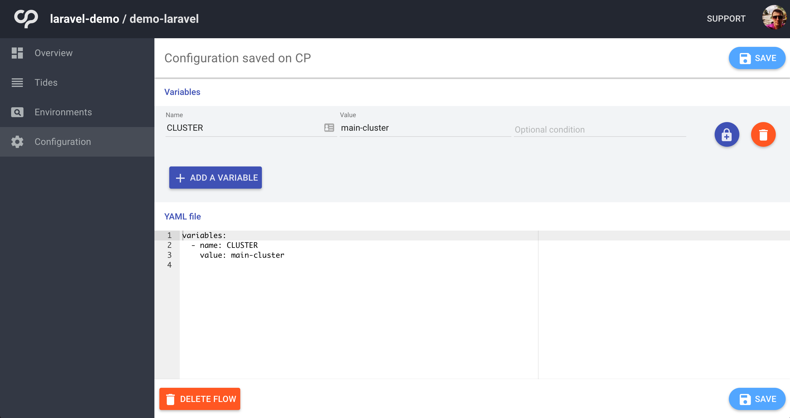
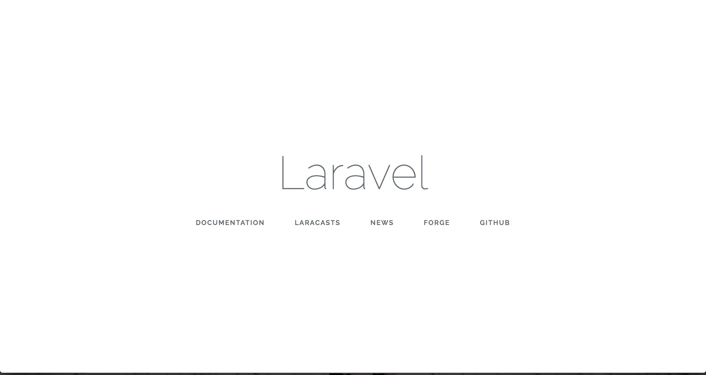
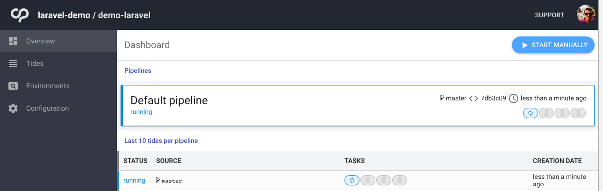
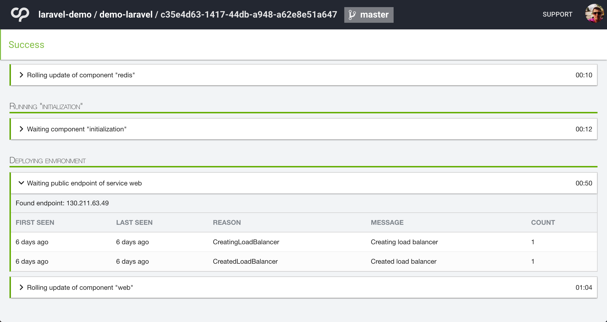
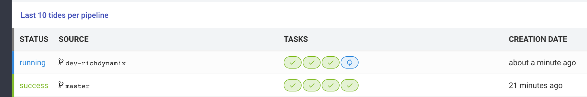
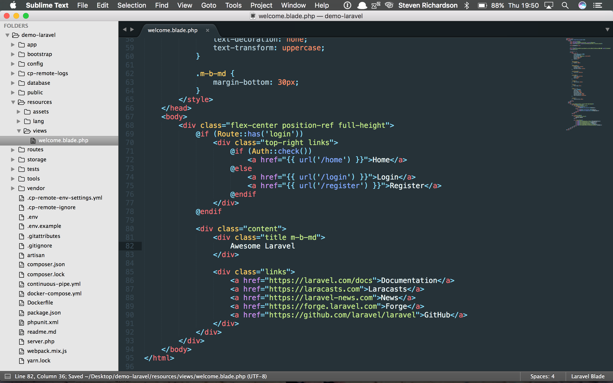
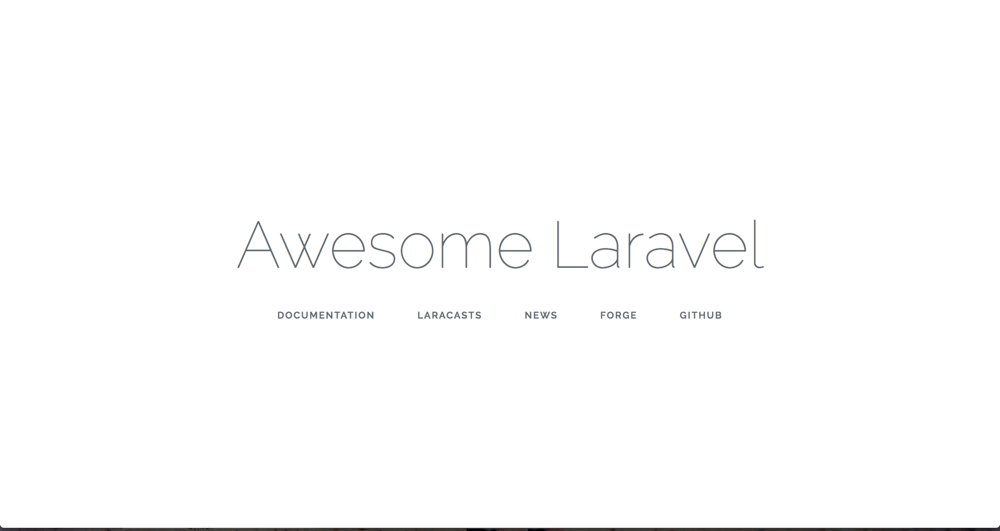

Getting Started with Laravel
Introduction
In this tutorial we are going to setup a new Laravel project, run it within Docker using one of ContinuousPipe’s base Dockerfiles, then finally push our project to our GitHub repo where ContinuousPipe will build our project and deploy on Google Container Engine. Once we are happy our project is building successfully we will then use ContinuousPipe to manage our cloud based development environment with the cp-remote CLI tool.
Prerequisites
Before getting started you will need the following -
- A GitHub or Bitbucket account to host your Laravel project
- A ContinuousPipe account
- A Kubernetes cluster e.g. AWS, GCE or Azure
- A Docker Registry account e.g. docker.io or quay.io
Setting up Laravel
The easiest way to install Laravel is with the Laravel installer, if you don’t have this you can simply follow the instructions to use composer instead. For simplicity we will use the Laravel installer.
$ laravel new demo-laravel
Since we used the Laravel installer, a .env file has been created for us and an application key has been set i.e.
APP_KEY=base64:OQ8H9vjocvQh284ojDBrODQ2HkrgWGDvdLCaQniHz0M=
During our deployments, Laravel needs this key after the composer install runs due to the post-install composer hook. Unfortunately we will not have a .env file set at this point so the easiest way to by pass this would be to set a default APP_KEY. Within config/app.php change line 106
from -
'key' => env('APP_KEY'),
to -
'key' => env('APP_KEY', 'base64:OQ8H9vjocvQh284ojDBrODQ2HkrgWGDvdLCaQniHz0M='),
We will overwrite the default key during deployments.
Since we are going to configure our application to use redis for our cache and session storage we need to add the package predis/predis to our project.
$ composer require predis/predis
Configuring ContinuousPipe
Before we can push any code to our repository, we need to ensure that the ContinuousPipe console is properly configured. Please refer to the ContinuousPipe Quick Start guide to setup your project, cluster, registry and create your first flow.
One last thing we need to do before we can begin using ContinuousPipe is configure which cluster we will use. You are free to configure as many clusters as you wish, in fact, its a good idea to have a separate cluster from production as you would for development and testing.
For now we have only got one cluster configured in ContinuousPipe. Lets assign that cluster name “main-cluster” to an environment variable which can be used with our build and deployment tasks.
From within the flow, click on configuration in the sidebar, create a new environment variable named CLUSTER with a value to match what you set as your cluster name/identifier. I have set my cluster name as main-cluster. Finally save the configuration.

Adding Docker configuration
Lets start by configuring our Dockerfile. We are going to use one of the ContinuousPipe images as our base. In reality, you would want to create a new base image that would extend this image to give you the ability to add other services, such as your NodeJS dependencies often used for the frontend build tools i.e. webpack
Dockerfile
FROM quay.io/continuouspipe/php7-nginx:stable COPY ./tools/docker/usr/ /usr/ USER build # Add the application COPY . /app WORKDIR /app USER root # Install dependencies ARG APP_ENV= RUN chown -R build:build /app && \ if [ -n "$APP_ENV" ]; then \ bash /app/tools/docker/setup/install.sh; \ fi
You will notice from the second line of our Dockerfile that it will copy tools/docker/usr/ to /usr/ This is put in place by the inheritance of the configuration from our base image. Its parent image, Ubuntu Base allows us to inject custom environment variables into our container at build time. This allows us to easily manipulate how the build is configured. For example, we can use these to define our web directory which is used to set the nginx vhost root configuration.
Setting additional Docker required files
Lets create a new file in tools/docker/usr/local/bin/supervisor_custom_start-laravel with the following -
tools/docker/usr/local/bin/supervisor_custom_start-laravel
#!/bin/bash # Bring in the as_code_owner function, to run commands as the user who owns the code. # Usually the "build" user. source /usr/local/share/bootstrap/common_functions.sh bash /app/tools/docker/setup/install.sh # Create env file if missing bash /app/tools/docker/setup/setup-dotenv.sh if [ "$REMOTE_ENV" = "1" ]; then as_code_owner "php artisan key:generate" fi
The comments should make it clear what each line does however, there are few additional files included in this script we need to create. First is our install.sh script, this will do our initial folder setup, run composer install and then set the correct file and folder permissions across our project.
The second included script is used to create our .env file from our environment variables. Even though technically Laravel can read our environment variables directly, the file needs to exist to generate a new key as Laravel will save the generated key to this file.
Lets add these files into tools/docker/setup -
tools/docker/setup/install.sh
#!/bin/bash set -xe # Source variables such as what user the site will be running as source /usr/local/share/bootstrap/setup.sh # Bring in the composer running function source /usr/local/share/php/common_functions.sh APP_PATH="/app"; # Create missing directories /app/tools/docker/setup/setup-directories.sh # Install the app cd "${APP_PATH}" || exit 1; run_composer chown -R "${CODE_OWNER}:${APP_GROUP}" bootstrap/cache/ storage chmod -R ug+rw,o-w bootstrap/cache/ storage/ chmod +x storagetools/docker/setup/setup-dotenv.sh
#!/bin/sh set -xe ENV_FILE="/app/.env"; if [ ! -f "$ENV_FILE" ]; then touch "$ENV_FILE" fi { echo "APP_ENV=${APP_ENV:-production}"; echo "APP_KEY=${APP_KEY:-base64:OQ8H9vjocvQh284ojDBrODQ2HkrgWGDvdLCaQniHz0M=}"; echo "APP_DEBUG=${APP_DEBUG:-false}"; echo "APP_URL=${APP_URL:-https://laravel-demo.dev}"; echo "DB_CONNECTION=${DB_CONNECTION:-mysql}"; echo "DB_HOST=${DB_HOST:-database}"; echo "DB_PORT=${DB_PORT:-3306}"; echo "DB_DATABASE=${DB_DATABASE:-laravel}"; echo "DB_USERNAME=${DB_USERNAME:-laravel}"; echo "DB_PASSWORD=${DB_PASSWORD:-laravel}"; echo "MAIL_DRIVER=${MAIL_DRIVER:-smtp}"; echo "MAIL_HOST=${MAIL_HOST:-mailtrap.io}"; echo "MAIL_PORT=${MAIL_PORT:-2525}"; echo "MAIL_USERNAME=${MAIL_USERNAME:-null}"; echo "MAIL_PASSWORD=${MAIL_PASSWORD:-null}"; echo "MAIL_ENCRYPTION=${MAIL_ENCRYPTION:-null}"; echo "CACHE_DRIVER=${CACHE_DRIVER:-redis}"; echo "SESSION_DRIVER=${SESSION_DRIVER:-redis}"; echo "QUEUE_DRIVER=${QUEUE_DRIVER:-database}"; echo "REDIS_HOST=${REDIS_HOST:-redis}"; echo "REDIS_PASSWORD=${REDIS_PASSWORD:-null}"; echo "REDIS_PORT=${REDIS_PORT:-6379}"; } >> "${ENV_FILE}"; # Allow the web server user to read this file in, and the build user to run `php artisan key:generate` chown "${CODE_OWNER}":"${APP_GROUP}" "${ENV_FILE}" chmod 640 "${ENV_FILE}"
Included from the install.sh file is -
tools/docker/setup/setup-directories.sh
#!/bin/sh set -xe APP_PATH="/app"; # Create new directories PUBLIC_DIR="${APP_PATH}/public"; STORAGE_DIR="${APP_PATH}/storage"; FRAMEWORK_DIR="${STORAGE_DIR}/framework"; CACHE_DIR="${FRAMEWORK_DIR}/cache"; VIEWS_DIR="${FRAMEWORK_DIR}/views"; SESSIONS_DIR="${FRAMEWORK_DIR}/sessions"; # Create missing storage directories mkdir -p "${PUBLIC_DIR}"; mkdir -p "${STORAGE_DIR}"; mkdir -p "${FRAMEWORK_DIR}"; mkdir -p "${CACHE_DIR}"; mkdir -p "${VIEWS_DIR}"; mkdir -p "${SESSIONS_DIR}";
Lets now create our custom environment variables file -
tools/docker/usr/local/share/env/20-project
#!/bin/bash export WORK_DIRECTORY=${WORK_DIRECTORY:-/app} export WEB_DIRECTORY=${WEB_DIRECTORY:-${WORK_DIRECTORY}/public} export STORAGE_DIR=${STORAGE_DIR:-${WORK_DIRECTORY}/storage} export UPLOADS_DIR=${UPLOADS_DIR:-${STORAGE_DIR}/app/public/uploads} export FRAMEWORK_DIR=${FRAMEWORK_DIR:-${STORAGE_DIR}/framework} export CACHE_DIR=${CACHE_DIR:-${FRAMEWORK_DIR}/cache} export VIEWS_DIR=${VIEWS_DIR:-${FRAMEWORK_DIR}/views} export SESSIONS_DIR=${CACHE_DIR:-${SESSIONS_DIR}/sessions} export APP_ENV=${APP_ENV:-production} export APP_KEY=${APP_KEY:-base64:OQ8H9vjocvQh284ojDBrODQ2HkrgWGDvdLCaQniHz0M=} export APP_DEBUG=${APP_DEBUG:-false} export APP_URL=${APP_URL:-https://laravel-demo.dev} export DB_CONNECTION=${DB_CONNECTION:-mysql} export DB_HOST=${DB_HOST:-database} export DB_PORT=${DB_PORT:-3306} export DB_DATABASE=${DB_DATABASE:-laravel} export DB_USERNAME=${DB_USERNAME:-laravel} export DB_PASSWORD=${DB_PASSWORD:-laravel} export MAIL_DRIVER=${MAIL_DRIVER:-smtp} export MAIL_HOST=${MAIL_HOST:-mailtrap.io} export MAIL_PORT=${MAIL_PORT:-2525} export MAIL_USERNAME=${MAIL_USERNAME:-null} export MAIL_PASSWORD=${MAIL_PASSWORD:-null} export MAIL_ENCRYPTION=${MAIL_ENCRYPTION:-null} export CACHE_DRIVER=${CACHE_DRIVER:-redis} export SESSION_DRIVER=${SESSION_DRIVER:-redis} export QUEUE_DRIVER=${QUEUE_DRIVER:-database} export REDIS_HOST=${REDIS_HOST:-redis} export REDIS_PASSWORD=${REDIS_PASSWORD:-null} export REDIS_PORT=${REDIS_HOST_PORT:-6379}
For the majority of this file we are setting environment variables using the default Laravel variables found in the .env file, with a few extras and one exception. The REDIS_PORT being set is looking for an injected variable REDIS_HOST_PORT. This is to mitigate the issue where SERVICENAME_PORT is a reserved keyword in docker-compose which ultimately sets the redis connection to tcp://ip.ad.dr.ress:port
For more information on how the custom environment variables are loaded please refer to the main base image readme
The only thing left to do for our Docker configuration is to setup our docker-compose.yml file.
docker-compose.yml
version: "2" services: web: build: context: . args: - APP_ENV links: - database - redis expose: - 80 - 443 ports: - "80:80" - "443:443" volumes: - .:/app environment: APP_USER_LOCAL: "true" database: image: quay.io/continuouspipe/mysql5.7:stable environment: MYSQL_ROOT_PASSWORD: laravel MYSQL_DATABASE: laravel MYSQL_USER: laravel MYSQL_PASSWORD: laravel expose: - 3306 ports: - "3360:3360" redis: image: quay.io/continuouspipe/redis3:stable expose: - 6379 ports: - "6379:6379"
Here we have three services, web, database and redis. Our web service is our main service that builds from our Dockerfile previously mentioned. This will link to our database and redis services which use quay.io/continuouspipe/mysql5.7:stable and quay.io/continuouspipe/redis3:stable respectivly. These are just standard redis:3.0 and mysql:5.7 official images in a simple wrapper that allows a faster patching mechanism.
We are injecting APP_ENV into our web container as a build argument. This will allow composer install to run on docker-compose up. Essentially, this means a developer can simply clone the project repo and start the Docker container and all the setup is handled for them. No more manual steps should be required.
Additionally our web container is exposing both port 80 and 443, this is because our base php7-nginx image is creating a self signed SSL certificate and forcing our app to use https:// as default.
There is an additional environment variable being set for our web container, APP_USER_LOCAL, which is used to fix volume permission issues.
Warning
APP_USER_LOCAL should only be used in development as using this could cause a security risk. Please see Volume Permission Fixes for more information
Docker needs to be able to execute the files we have in tools/docker/setup. Lets make sure that all files have execute permissions -
$ chmod -R +x tools/docker/setup
We can now start our Docker containers -
$ docker-compose up
If everything has gone to plan, we should now see the famous “Laravel” splash page at https://localhost

Prepare to build on ContinuousPipe
We configure ContinuousPipe with a continuous-pipe.yml file in the root of our project. This is the main configuration file that defines each of our tasks to be executed. As this configuration file is YAML, please ensure proper indentation is set, otherwise ContinuousPipe will fail to load the configuration file correctly.
First thing we define is some environment variables -
continuous-pipe.yaml (partial)
environment_variables: - name: APP_ENV value: "production" - name: REMOTE_ENV value: "1"
We are simply setting a the APP_ENV for use within our build and REMOTE_ENV which can be used to distinguish the difference between a local docker build and a ContinuousPipe build. This can be useful when you need to to pull additional assets from 3rd party services or perhaps build the frontend assets in your deployments. For this tutorial, we are using this to allow us to generate a new APP_KEY during the deployment stage.
Next we define our tasks, our first task is building our image -
continuous-pipe.yaml (partial)
tasks: images: build: environment: - name: APP_ENV value: ${APP_ENV} services: web: image: quay.io/continuouspipe/laravel-demo
Here we injecting the APP_ENV build argument, the same as we did for our docker-compose.yml file. We also define the registry repository address where we want to push our freshly built images to.
The next task to run is the infrastructure task -
continuous-pipe.yaml (partial)
infrastructure: deploy: cluster: ${CLUSTER} environment: name: '"project-key-" ~ code_reference.branch' services: database: specification: volumes: - type: persistent name: database-volume capacity: 5Gi storage_class: default volume_mounts: - name: database-volume mount_path: /var/lib/mysql command: - /usr/local/bin/docker-entrypoint.sh - mysqld - --ignore-db-dir=lost+found - --max_allowed_packet=128M ports: - 3306 resources: requests: cpu: 50m memory: 250Mi limits: cpu: 500m memory: 500Mi redis: deployment_strategy: readiness_probe: type: tcp port: 6379 specification: ports: - 6379 resources: requests: cpu: 50m memory: 100Mi limits: cpu: 250m memory: 250Mi
This is where we build our redis and database containers. We define a persistent volume to store our database so we don’t need to build again on subsequent deployments. We are also setting the required cluster resources for these containers. Notice we set cluster: ${CLUSTER}. This is pulling the cluster name we previously set in the ContinuousPipe UI under Clusters.
Note
An important change for each of our tasks is to define the project key. Where I have set an environment name as "project-key-" ~ code_reference.branch, you should replace the project-key with your project name you defined earlier in the ContinuousPipe setup step.
Our next task in the list is initialization -
continuous-pipe.yaml (partial)
initialization: run: cluster: ${CLUSTER} environment: name: '"project-key-" ~ code_reference.branch' image: from_service: web commands: - tools/docker/setup/setup.sh environment_variables: &WEB_ENV_VARS - name: APP_ENV value: ${APP_ENV} - name: REMOTE_ENV value: ${REMOTE_ENV} - name: APP_URL value: ${APP_URL} - name: APP_USER_LOCAL value: false filter: expression: 'tasks.infrastructure.services.database.created'
The purpose of this task is to allow us to run any database specific tasks for our application. This might be the combination of a php artisan migrate and php artisan db:seed. Notice we are using the filter expression: 'tasks.infrastructure.services.database.created', this ensures we only run this when we know the database is finished building. We run these commands by executing a script tools/docker/setup/setup.sh inside the container that has had some specific environment variables set.
Note: We have explicitly set APP_USER_LOCAL to false to elevate any security concerns previously mentioned with this setting
The last task in this configuration is application -
continuous-pipe.yaml (partial)
application: deploy: cluster: ${CLUSTER} environment: name: '"project-key-" ~ code_reference.branch' services: web: specification: accessibility: from_external: true environment_variables: <<: *WEB_ENV_VARS resources: requests: cpu: 50m memory: 500Mi limits: cpu: 1 memory: 2G ports: - 80 - 443 deployment_strategy: readiness_probe: type: tcp port: 80 initial_delay_seconds: 30 period_seconds: 30 failure_threshold: 120
Here we are creating a new web container, making it accessible to the public which instructs ContinuousPipe to get an IP address from the load balancer. We inject the environment variables previously defined in the initalization task, and finally we configure the resources required from the cluster and open up the required ports, 80 and 443
The last section of this task is the deployment_strategy which configures how ContinuousPipe will determine when the container is finished building and if it was successful or not. For more information on health checks please refer to http://continuouspipe.github.io/docs/
Now that we have defined our continuous-pipe.yml file lets configure that one last script we set to use in the initialization task. Create a new file tools/docker/setup/setup.sh with the following -
tools/docker/setup/setup.sh
#!/bin/bash set -xe # Bring in the as_code_owner function, to run commands as the user who owns the code. # Usually the "build" user. source /usr/local/share/bootstrap/setup.sh source /usr/local/share/bootstrap/common_functions.sh WORK_DIRECTORY="/app"; export DB_CONNECTION=${DB_CONNECTION:-mysql} export DB_HOST=${DB_HOST:-database} export DB_PORT=${DB_PORT:-3306} export DB_DATABASE=${DB_DATABASE:-laravel} export DB_USERNAME=${DB_USERNAME:-laravel} export DB_PASSWORD=${DB_PASSWORD:-laravel} export DB_ROOT_PASSWORD=${DB_PASSWORD:-laravel} cd "${WORK_DIRECTORY}" || exit 1; as_code_owner "php artisan migrate"
We are simply running a php artisan migrate here to setup all our defined database tables.
OK, we are finally ready to push all our code to GitHub and utilise ContinuousPipe to build and deploy our application on the cluster.
Lets now push our code to GitHub to trigger ContinuousPipe -
$ git init
$ git add -A
$ git commit -m "Initial Commit"
$ git remote add origin https://github.com:continuouspipe/demo-laravel.git
$ git push -u origin master
Counting objects: 128, done.
Delta compression using up to 4 threads.
Compressing objects: 100% (107/107), done.
Writing objects: 100% (128/128), 206.86 KiB | 0 bytes/s, done.
Total 128 (delta 8), reused 0 (delta 0)
remote: Resolving deltas: 100% (8/8), done.
To github.com:continuouspipe/demo-laravel.git
* [new branch] master -> master
Branch master set up to track remote branch master from origin.
Thats it, we should now see ContinuousPipe working through our defined tasks -

Once all our tasks have finished we should see a success status, everything green and a public endpoint for the web service.

If we now visit this endpoint in the browser e.g. https://104.199.75.150/ we should now see that Laravel splash page we previously seen when running in our local Docker build -
Remote development environment
Since our project is essentially just running in docker and it now works on both local Docker and ContinuousPipe we can effectively turn our cluster performance into a really fast development environment.
We are going to instruct ContinuousPipe to build us a new environment by creating our own “dev” branch in our GitHub repository. When complete, we will watch our local file system for any changes to our codebase and synchronise these changes into our running web container. It’s really that simple.
Install cp-remote
cp-remote is available on OSX, Linux and Windows. Please refer to the remote development installation instructions for each of the platforms.
For simplicity, here is the OSX installation instructions
sudo curl https://raw.githubusercontent.com/continuouspipe/remote-environment-client/gh-pages/0.0.1/darwin-amd64.gz > cp-remote.gz
gzip -d cp-remote.gz;
mv cp-remote /usr/local/bin/cp-remote
chmod +x /usr/local/bin/cp-remote
Note
rsync & git are required for cp-remote to work
Setup
Now that we have cp-remote installed, we are ready to setup our remote environment. From the root of your project run the following -
$ cp-remote setup
You will now be asked a series of questions that relate to how you have configured ContinuousPipe and your cluster details. Please refer to the remote development setup instructions for more information.
Build the environment
Run the following -
$ cp-remote build
This is now going to create a new git branch from the current branch with the name you defined in the setup. Its going to push this branch to GitHub which will then trigger ContinuousPipe to create you a new developer environment. You should now see the something like -
Pushing to remote
Total 0 (delta 0), reused 0 (delta 0)
To github.com:continuouspipe/demo-laravel.git
* [new branch] master -> dev-richdynamix
Continuous Pipe will now build your developer environment
You can see when it is complete and find its IP address at https://your-ui.example.com/
Please wait until the build is complete to use any of this tool's other commands.

You can check that the environment is ready either from the ContinuousPipe UI or by running the following -
$ cp-remote ck
Which should display something like this -
checking connection for environment laravel-demo-dev-richdynamix
Connected successfully and found 3 pods for the environment
Now that we know all three containers (pods) have been setup we need to obtain the IP address from the ContinuousPipe UI for that tide. Lets visit the IP address in our browser and once again, we will see the Laravel splash page.
Watching for changes
From within your project root, lets start watching for file changes -
$ cp-remote watch
Watching for changes. Quit anytime with Ctrl-C.
.cp-remote-ignore was missing or empty and has been created with the default ignore settings.
Destination Pod: web-3232721034-k6g9t
Here we run the cp-remote watch command which will use our default web container as the destination pod.
Lets edit some code and see our changes reflected in the browser. Open resources/views/welcome.blade.php and change the title on Line 82. I will change it to “Awesome Laravel”.

When you save this file from within your editor, the cp-remote watch command will pick up these changes and RSYNC them to the web container. Your terminal should look something like the following -
$ cp-remote watch
Watching for changes. Quit anytime with Ctrl-C.
.cp-remote-ignore was missing or empty and has been created with the default ignore settings.
Destination Pod: web-3232721034-k6g9t
Synchronizing filesystem changes...
resources/views/welcome.blade.php
Done.
Now when you check the site in the browser you should see the following -

Here is a quick screencast of that syncing in action -
{kind=link}
The syncing speeds are pretty fast, so fast in fact, I can run this from a train wifi while retaining the performance of the cloud hosting.
For full instructions on other commands in the cp-remote CLI tool, such as port forwarding, connecting to the web container via BASH or even destroying the environment visit the README
Conclusion
ContinuousPipe is a fantastic tool for simplifying container orchestration and deployment. Its makes the CI/CD workflow much more productive than similar tools available. One of the best and unique features of ContinuousPipe is the remote developer environments. This not only reduces the resource requirements of the developer’s laptop, but it also ensures compatibility across platforms.
There is far more we can do with ContinuousPipe to increase productivity, for example, we can use filters to determine when tasks are run. Perhaps we only want certain branches to build environments, or a certain GitHub label on a Pull-Request to trigger the build. We can also go one step further and separate our builds into pipelines. Perhaps we want to have a separate pipeline for production compared to development or testing. This is useful if there are certain environment variables and tasks that should only be used in development but not production.
This getting started guide should be treated as a first step, please refer to the http://continuouspipe.github.io/docs for more advanced tutorials.